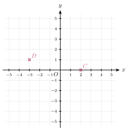
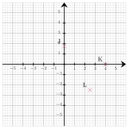
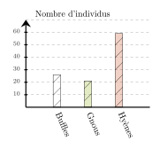

01
Question
$A = \dfrac{4}{3} \times 4$
$A = \dfrac{4}{3} \times 4$
$A = {\color{#EB7F73}\boldsymbol{\dfrac{16}{3}}}$
$A = {\color{#EB7F73}\boldsymbol{\dfrac{16}{3}}}$
| Nombre | $-7{,}9$ | $-8{,}7$ | ||||
| Opposé du nombre | $-0{,}3$ | $-6{,}2$ | $1{,}3$ | $-3{,}2$ |
| Nombre | $-7{,}9$ | ${\color{#EB7F73}\boldsymbol{0{,}3}}$ | ${\color{#EB7F73}\boldsymbol{6{,}2}}$ | ${\color{#EB7F73}\boldsymbol{-1{,}3}}$ | ${\color{#EB7F73}\boldsymbol{3{,}2}}$ | $-8{,}7$ |
| Opposé du nombre | ${\color{#EB7F73}\boldsymbol{7{,}9}}$ | $-0{,}3$ | $-6{,}2$ | $1{,}3$ | $-3{,}2$ | ${\color{#EB7F73}\boldsymbol{8{,}7}}$ |


| Amis \ fruits | Kiwi | Poire | Melon | Coing | TOTAL |
|---|---|---|---|---|---|
| Wendy | |||||
| Karine | |||||
| TOTAL |
| Amis \ fruits | Kiwi | Poire | Melon | Coing | TOTAL |
|---|---|---|---|---|---|
| Wendy | $0{,}7$ | $0$ | $2{,}7$ | $1{,}5$ | $4{,}9$ |
| Karine | $3{,}8$ | $5{,}5$ | $7{,}8$ | $3{,}6$ | $20{,}7$ |
| TOTAL | $4{,}5$ | $5{,}5$ | $10{,}5$ | $5{,}1$ | $25{,}6$ |

